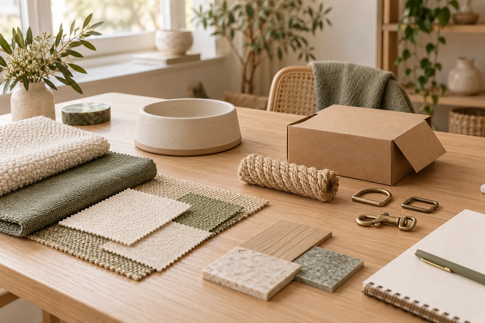

Supplier Research & Shortlisting
Research potential manufacturers against your product category, materials and target-market requirements. Discuss suitability and shortlist options for further enquiries.
INDEPENDENT SOURCING / SHENZHEN, CHINA
Practical sourcing and supplier coordination for international pet brands, importers and retailers.
From researching manufacturers to following up on samples, production and shipments, KOVA helps connect your cat and dog product brief with the conversations on the ground.
Start a Sourcing Inquiry
FIND A SUITABLE STARTING POINT
Understand the options before deciding how to move your product brief forward.
Research potential manufacturers against your product category, materials and target-market requirements. Discuss suitability and shortlist options for further enquiries.
Clarify specifications and supplier responses. Compare quoted prices, stated MOQs, packaging, lead times and scope so differences are easier to assess.
TURN YOUR BRIEF INTO DISCUSSIONS
Materials, branding and samples —
coordinated around your requirements.
Coordinate discussions on materials, dimensions, colours, logo placement and packaging. Supplier feasibility, sample approval and ownership terms are clarified before proceeding.
Organise sample requests, track progress and relay your feedback. Keep proposed changes visible so you can refine specifications before placing an order.
You make the product decisions. KOVA helps organise the information and supplier communication.
KEEP THE NEXT STEP IN VIEW
Arrange factory visits where appropriate and follow up on agreed production milestones. Scope and availability are confirmed for the project; visits do not constitute certification or specialist inspection.
Communicate reported issues, gather supplier responses and coordinate next steps. Specialist testing or independent inspection requires separate arrangements where applicable.
Follow up on order details, packing information and shipment arrangements with suppliers and your chosen logistics partners, keeping outstanding questions clear.
WHY WORK WITH KOVA
Shenzhen-based supplier communication and flexible project-based support for small and medium-sized businesses.
About KOVAAPPROXIMATELY
The founder’s experience is primarily in industrial equipment and manufacturing projects, including quotations, production follow-up, factory visits, quality issue coordination and international shipments.
KOVA is expanding into pet product sourcing. This background is not eight years of pet-industry experience or evidence of established pet supplier partnerships.
WHAT YOU CAN EXPECT
These are potential deliverables to discuss when defining the scope, rather than fixed packages or guaranteed outcomes.
Potential manufacturer options and points to clarify.
Differences in quoted scope and stated order requirements.
Progress, supplier responses and proposed changes.
Updates on the stages agreed for your project.
Packing and delivery questions followed up with relevant parties.
START WITH YOUR REQUIREMENTS
Share your product requirements, target quantity and customization ideas. Let's discuss how KOVA can support your project.
Start a Sourcing Inquiry